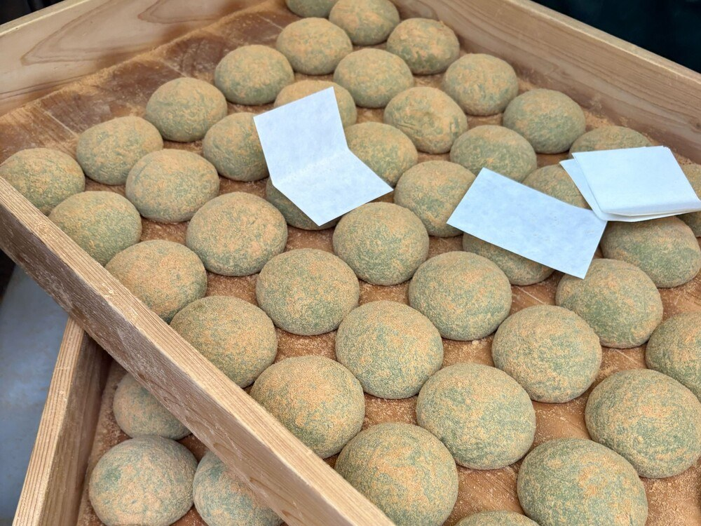
| 営業時間 | 10:00〜19:00（売り切れ次第閉店の場合あり） |
|---|---|
| 定休日 | 不定休（Instagramで案内） |
| 住所 | 奈良県奈良市橋本町29 |
| 予約 | 不可 — ☎ 0742-23-0141 ／ 公式サイト |
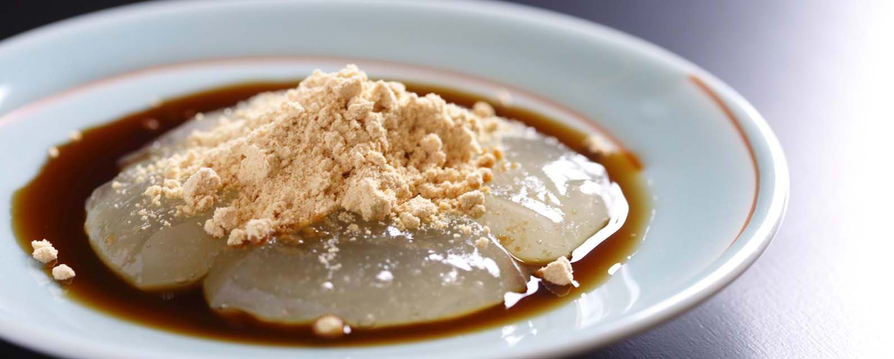
| 営業時間 | 10:00〜19:30（L.O.19:00） |
|---|---|
| 定休日 | 火曜（祝日の場合翌日） |
| 住所 | 奈良県奈良市押上町1-6 |
| 予約 | 可（2名様より、コース料理は要予約） — ☎ 0742-27-5011 ／ 公式サイト |
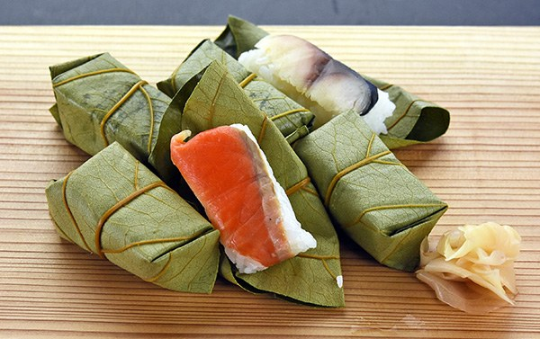
| 営業時間 | 本館10:00〜20:30／はなれ11:30〜20:00（飲食L.O.） |
|---|---|
| 定休日 | 不定休（詳細はカレンダーで案内） |
| 住所 | 奈良県奈良市今御門町30-1 |
| 予約 | 可（ランチは10名様以上で要予約） — ☎ 0742-22-0866 ／ 公式サイト |
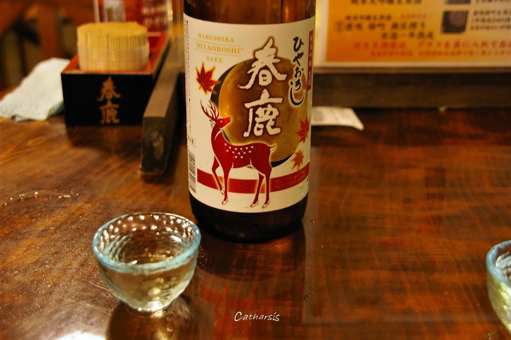
| 営業時間 | 10:00〜17:00（利き酒受付10:00〜16:30） |
|---|---|
| 定休日 | 無休（年末年始等は要確認） |
| 住所 | 奈良県奈良市福智院町24-1 |
| 予約 | 平日は要予約（10時・11時の回、4〜8名、所要30分） — ☎ 0742-23-2255 ／ 公式サイト |
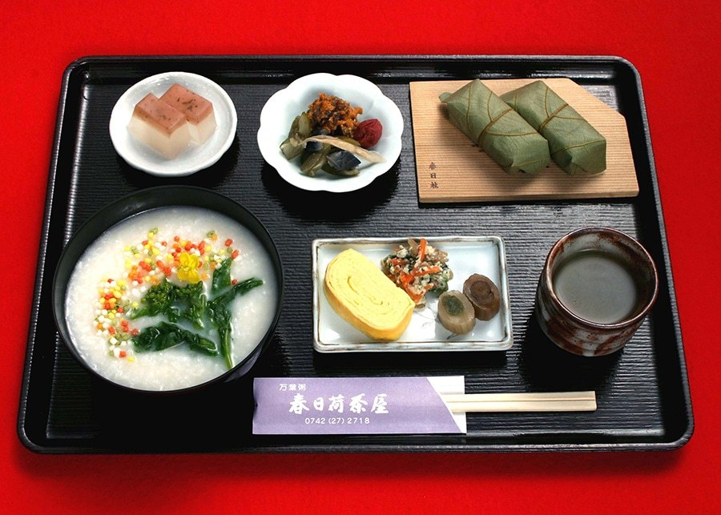
| 営業時間 | 10:30〜16:30（L.O.16:00） |
|---|---|
| 定休日 | 不定休（毎月の定休日はサイトで案内） |
| 住所 | 奈良県奈良市春日野町160 |
| 予約 | 不可 — ☎ 0742-27-2718 ／ 公式サイト |
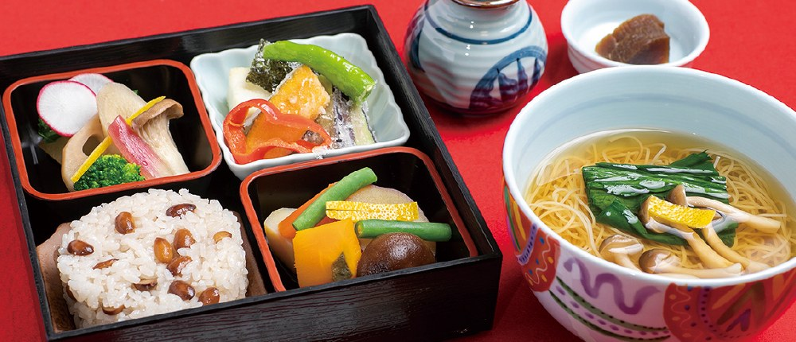
| 営業時間 | 11:30〜16:30（L.O.16:00） |
|---|---|
| 定休日 | 木・金曜 |
| 住所 | 奈良県奈良市春日野町158-1 |
| 予約 | 要確認 — ☎ 0742-22-4744 ／ 公式サイト |
| 営業時間 | 9:00〜18:00 |
|---|---|
| 定休日 | 要確認 |
| 住所 | 奈良県奈良市春日野町23 |
| 予約 | 不可（物販中心） — ☎ 0742-26-2063 ／ 公式サイト |
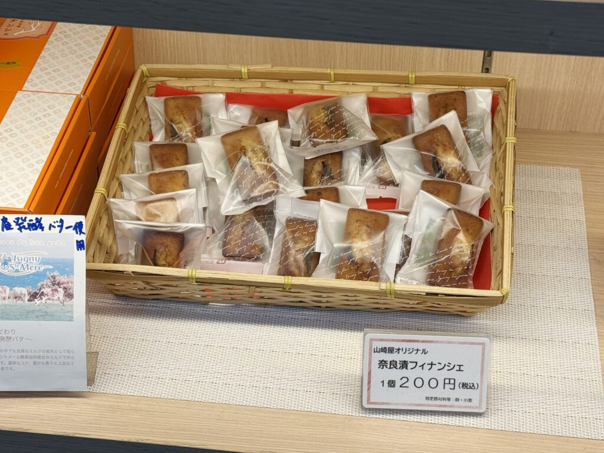
| 営業時間 | 10:00〜18:30 |
|---|---|
| 定休日 | 要確認 |
| 住所 | 奈良県奈良市東向南町5 |
| 予約 | 不可 — ☎ 0742-22-8039 ／ 公式サイト |
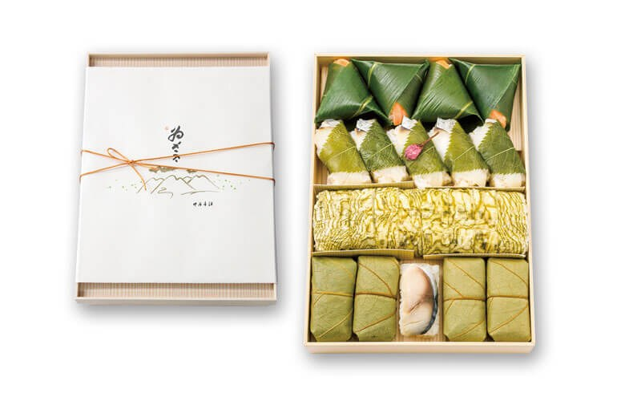
| 営業時間 | 10:00〜18:00 |
|---|---|
| 定休日 | 月2〜3回、公式サイトのカレンダーで指定(2026年9月は7日・14日・28日) |
| 住所 | 奈良県奈良市押熊町2141-1 |
| 予約 | 不可 — ☎ 0742-48-5000 ／ 公式サイト |
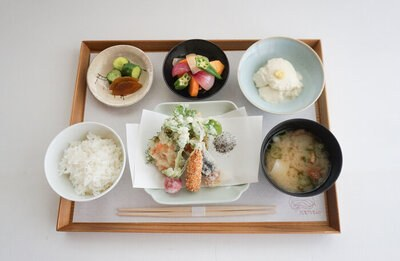
| 営業時間 | 11:00〜16:00（ご飯がなくなり次第、15時頃終了の日もあり） |
|---|---|
| 定休日 | 水曜 |
| 住所 | 奈良県奈良市井上町11「鹿の舟」内 |
| 予約 | 不可 — ☎ 0742-94-5520 ／ 公式サイト |
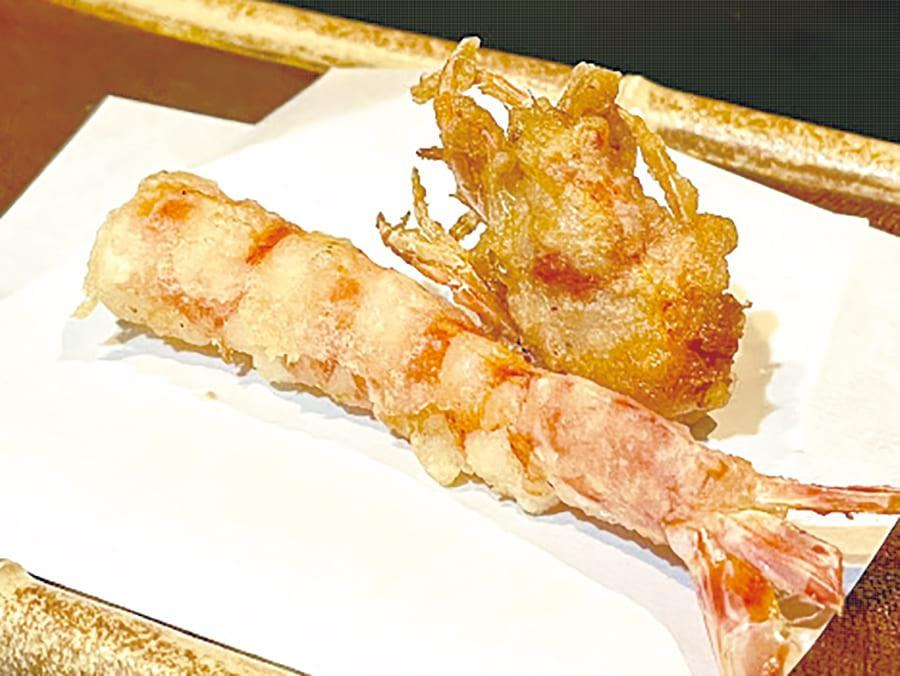
| 営業時間 | 17:00〜21:00（夜のみ・完全予約制） |
|---|---|
| 定休日 | 水曜 |
| 住所 | 奈良県奈良市大森町23-1 |
| 予約 | 要予約（完全予約制） — ☎ 050-8889-1215 |
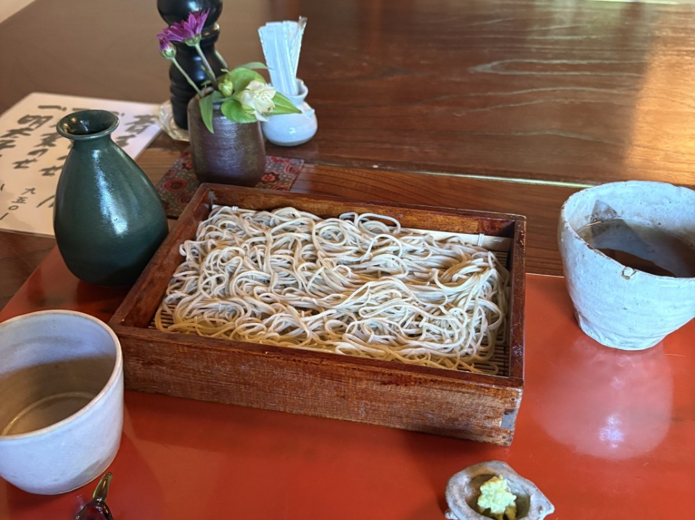
| 営業時間 | 火〜金 11:30〜13:00(L.O.)・18:00〜21:00（夜は入店18:00のみ）／土 11:30〜13:00(L.O.) |
|---|---|
| 定休日 | 日曜・月曜 |
| 住所 | 奈良県奈良市福智院町23-2 |
| 予約 | 要予約（前日までの電話予約推奨） — ☎ 0742-27-6868 |
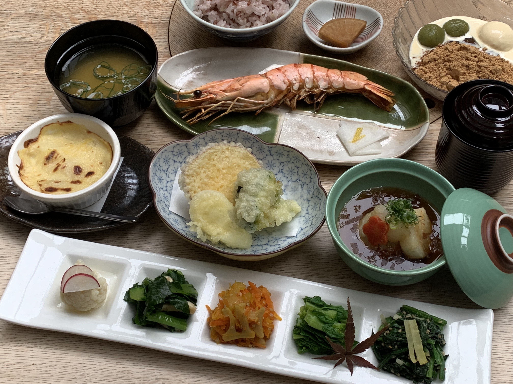
| 営業時間 | 昼11:30〜14:30(L.O.14:00)／夜17:00〜21:30(L.O.20:30) ※資料により夜17:30〜の表記もあり要確認 |
|---|---|
| 定休日 | 月曜・火曜（祝日は営業） |
| 住所 | 奈良県奈良市中新屋町26 鶉屋倶楽部1F |
| 予約 | 可 — ☎ 0742-24-1470 ／ 公式サイト |
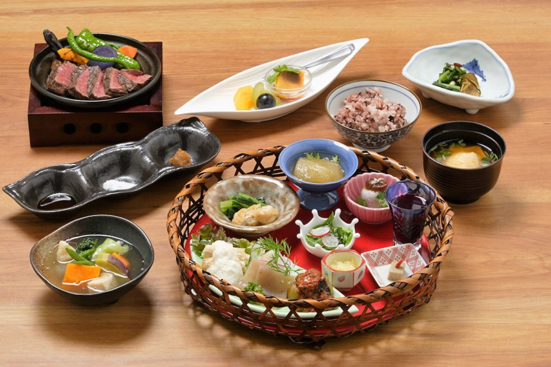
| 営業時間 | 昼11:30〜14:30(最終入店13:00・L.O.14:00)／夜17:30〜21:00(最終入店19:00・L.O.20:30) |
|---|---|
| 定休日 | 火曜 |
| 住所 | 奈良県奈良市勝南院町1番地 |
| 予約 | 要予約（完全予約制） — ☎ 0742-24-5699 ／ 公式サイト |
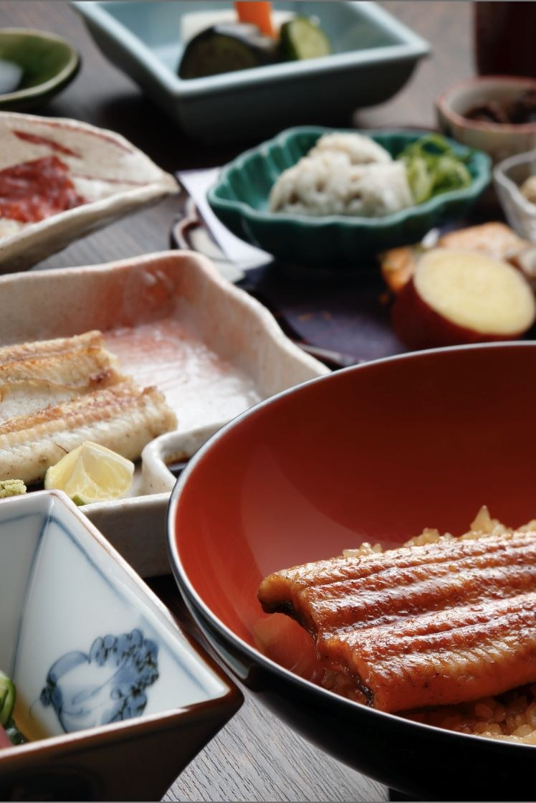
| 営業時間 | 昼11:00〜14:45(L.I.)／夜17:00〜19:00(L.I.) |
|---|---|
| 定休日 | 火曜 |
| 住所 | 奈良県奈良市高畑町1130 菊水楼内 |
| 予約 | 可（AI電話予約対応、直接スタッフ対応も可） — 公式サイト |
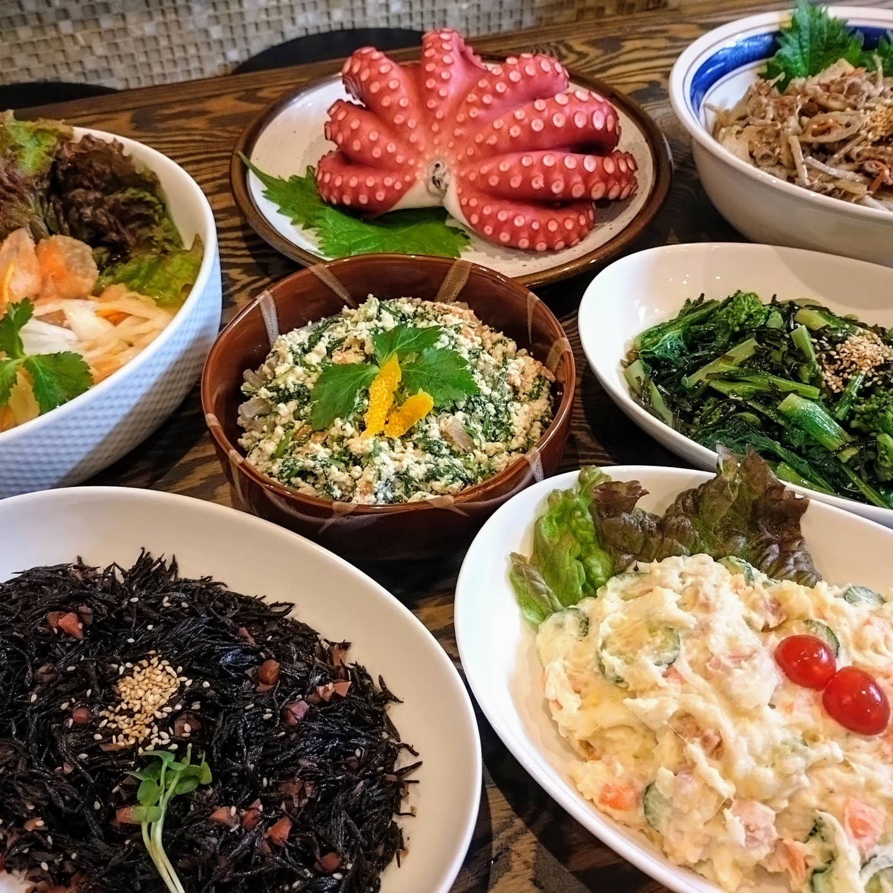
| 営業時間 | 17:00〜22:00(L.O.21:00)／日曜ランチ11:30〜14:00(L.O.13:30) |
|---|---|
| 定休日 | 水曜 |
| 住所 | 奈良県奈良市東向北町21-1 松山ビル1F-2 1階奥 |
| 予約 | 要確認 — ☎ 080-2558-3317 ／ 公式サイト |
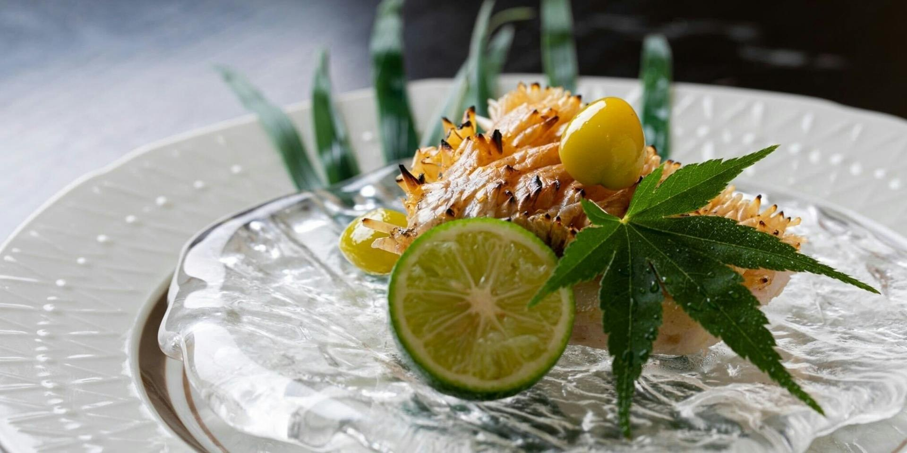
| 営業時間 | 昼11:30〜（完全予約制・2時間制）／夜18:00〜23:00（完全予約制） |
|---|---|
| 定休日 | 不定休 |
| 住所 | 奈良県奈良市西大寺栄町3-12 サンワ栄町第二ビル102 |
| 予約 | 要予約（完全予約制） — ☎ 0742-32-1100 ／ 公式サイト |
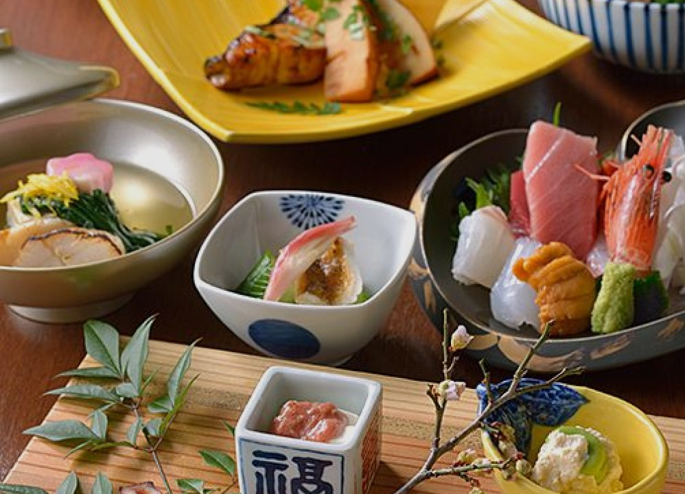
| 営業時間 | 昼11:30〜14:30(L.O.13:30)／夜18:00〜21:30(L.O.20:00) |
|---|---|
| 定休日 | 火曜・水曜（他不定休あり） |
| 住所 | 奈良県奈良市左京4-2-7 |
| 予約 | 可 — ☎ 0742-71-1110 ／ 公式サイト |
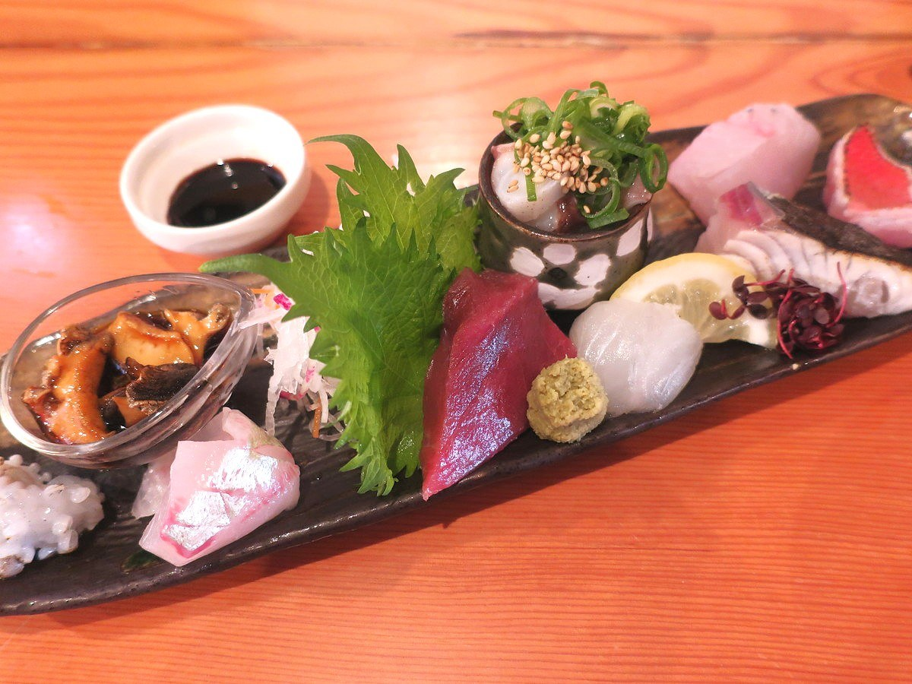
| 営業時間 | 火〜金17:00〜22:00／土16:00〜22:00／月1回 日曜12:00〜18:30 |
|---|---|
| 定休日 | 日曜・月曜（月1回日曜のみ「にちようびのたろいも」営業） |
| 住所 | 奈良県奈良市西木辻町94-1 日光ハイツ101号 |
| 予約 | 可（お造り盛り合わせは予約特典） — ☎ 0742-23-3588 |
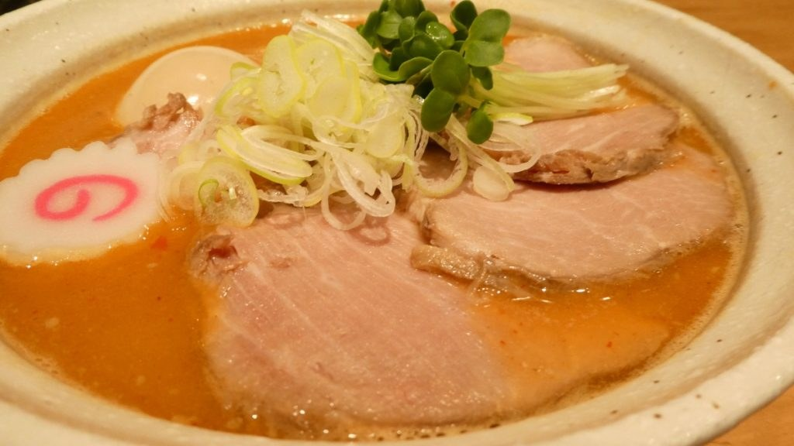
| 営業時間 | 平日11:00〜15:00・17:00〜21:00／金土日祝11:00〜21:00（月末日は11:00〜15:00のみ） |
|---|---|
| 定休日 | 年中無休 |
| 住所 | 奈良県奈良市西大寺国見町1-1-1 大和西大寺駅構内 |
| 予約 | 不可 — ☎ 0742-32-3001 |
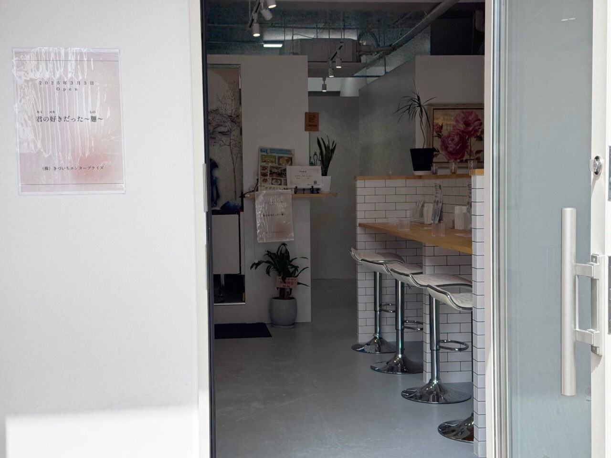
| 営業時間 | 現在は昼のみ営業（詳細な時間は要確認） |
|---|---|
| 定休日 | 要確認 |
| 住所 | 奈良県奈良市大宮町6丁目 |
| 予約 | 要確認 |
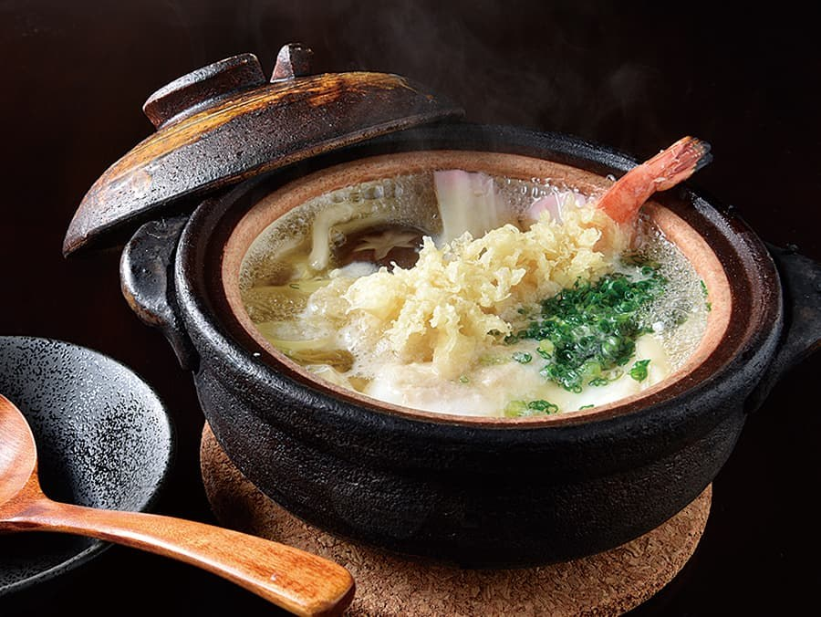
| 営業時間 | 11:00〜15:00（LO14:45）・17:00〜21:00（LO20:30、売り切れ次第終了） |
|---|---|
| 定休日 | 不定休 |
| 住所 | 奈良県奈良市東向南町13-2 |
| 予約 | 不可 — ☎ 0742-22-0051 ／ 公式サイト |
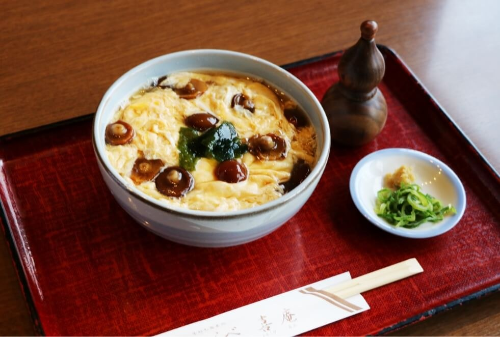
| 営業時間 | 11:00〜18:00（LO17:30） |
|---|---|
| 定休日 | 不定休（例: 2026年2月24日(火)〜26日(木)臨時休業） |
| 住所 | 奈良県奈良市春日野町16 |
| 予約 | 要確認 — ☎ 0742-24-1882 ／ 公式サイト |
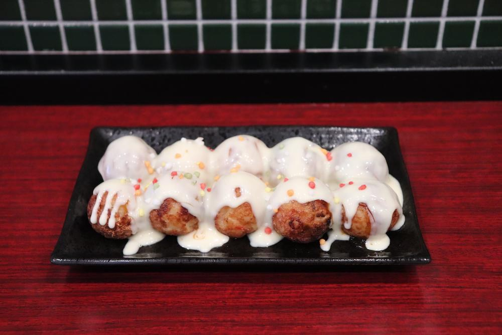
| 営業時間 | 10:30〜19:00（水曜以外） |
|---|---|
| 定休日 | 水曜日 |
| 住所 | 奈良県奈良市角振町39-1 |
| 予約 | 不可 — ☎ 0742-93-6383 |
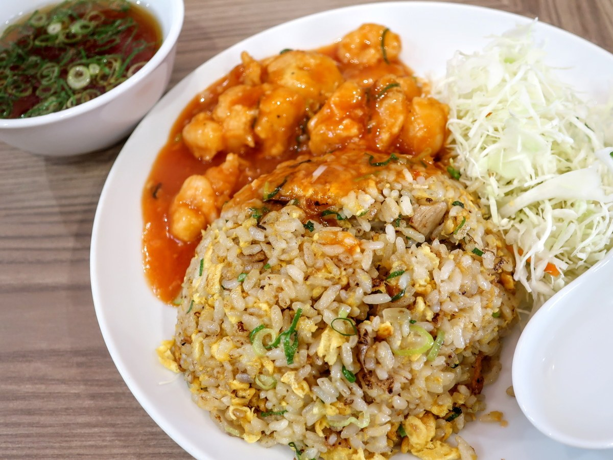
| 営業時間 | 11:00〜14:00（LO13:30）・17:00〜22:00（LO21:30） |
|---|---|
| 定休日 | 火曜日 |
| 住所 | 奈良県奈良市杉ヶ町27-4 山本ビル1F |
| 予約 | 要確認 — ☎ 0742-93-4005 |
| 営業時間 | 11:00〜15:00（無くなり次第終了） |
|---|---|
| 定休日 | 火・水・木曜（月・金・土・日のみ営業） |
| 住所 | 奈良県奈良市橋本町30-1 |
| 予約 | 不可 — ☎ 0742-25-3581 |
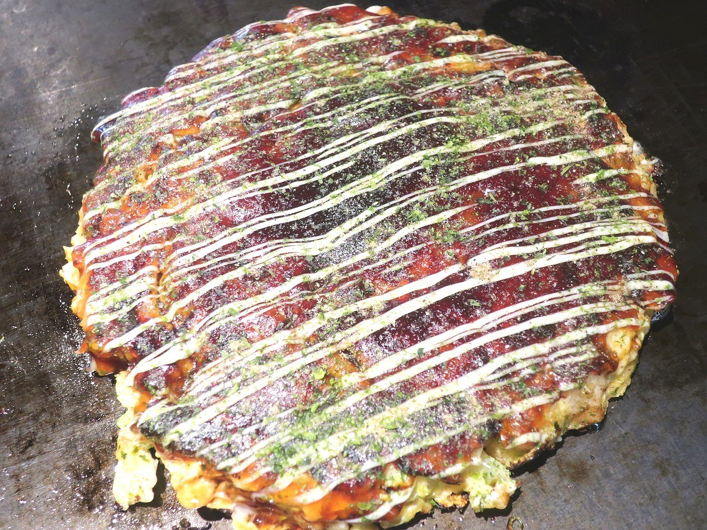
| 営業時間 | 17:00〜23:00（土日は12:00すぎ〜） |
|---|---|
| 定休日 | 不定休 |
| 住所 | 奈良県奈良市上三条町12-1 |
| 予約 | 要確認 — ☎ 050-5488-1306 |
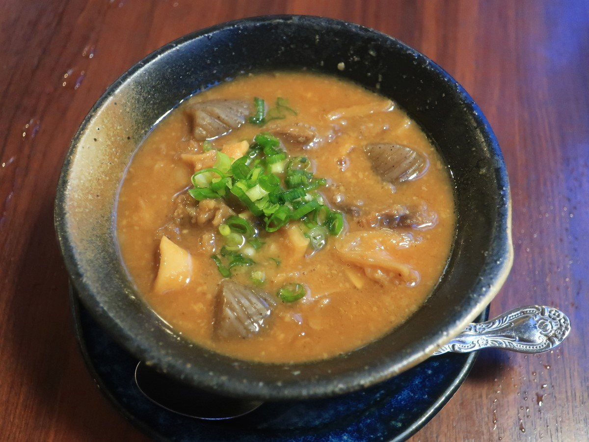
| 営業時間 | 14:00〜21:00（L.O.20:30） |
|---|---|
| 定休日 | 年末年始 |
| 住所 | 奈良県奈良市東向中町28 奈良近鉄ビルB1 |
| 予約 | 不可（立ち飲み） — ☎ 0742-26-2625 ／ 公式サイト |
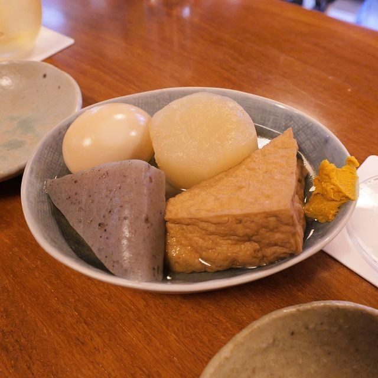
| 営業時間 | 13:00〜20:00（ラストオーダー19:30、ドリンク19:40） |
|---|---|
| 定休日 | 木曜日 |
| 住所 | 奈良県奈良市角振町24-4 |
| 予約 | 不可 |
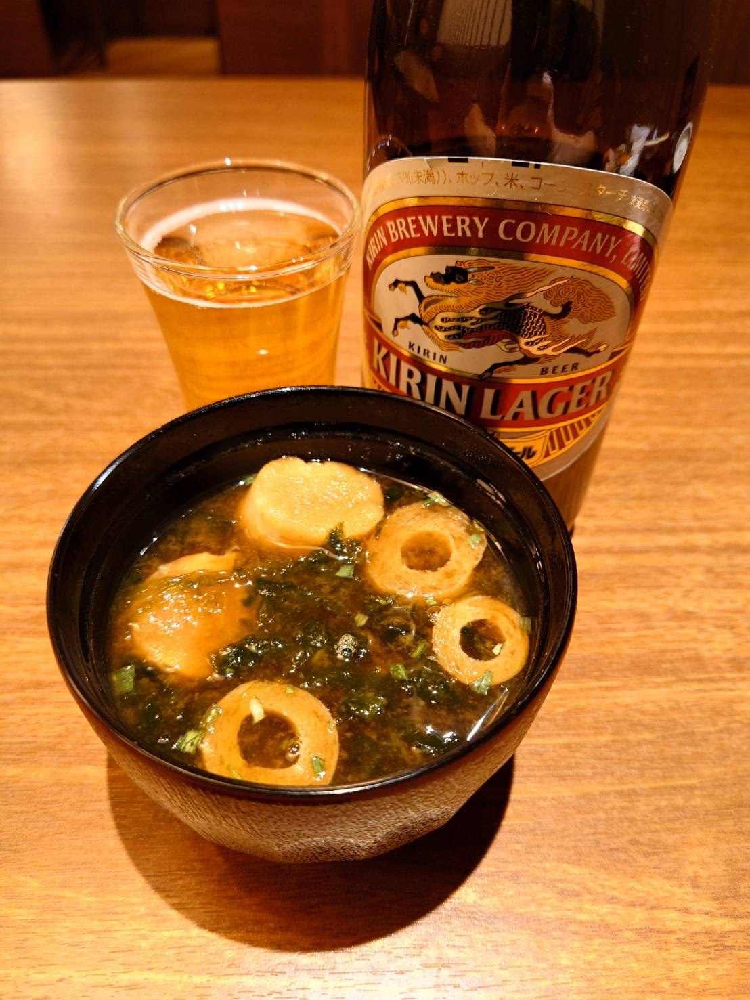
| 営業時間 | 月〜金17:00〜23:00・土日祝16:00〜23:00 |
|---|---|
| 定休日 | なし（年中無休） |
| 住所 | 奈良県奈良市小西町5番地 アルテ館1階1-G |
| 予約 | 可 |
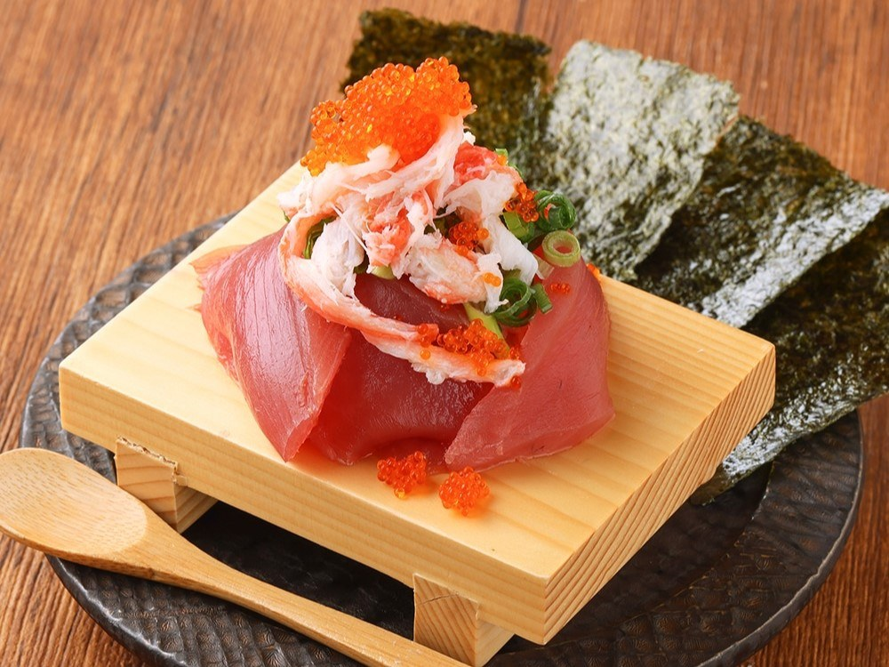
| 営業時間 | 月〜金16:00〜23:30・土日祝14:00〜23:30 |
|---|---|
| 定休日 | なし（年中無休） |
| 住所 | 奈良県奈良市西大寺東町2-1-63 サンワシティ西大寺B1F |
| 予約 | 可 — ☎ 050-5448-6184 ／ 公式サイト |
| 営業時間 | 平日・祝前日17:00〜23:00・土日祝15:00〜23:00 |
|---|---|
| 定休日 | なし（年中無休） |
| 住所 | 奈良県奈良市東向南町23-2 1F |
| 予約 | 可 — ☎ 050-5485-4712 |
| 営業時間 | 月〜木16:30〜23:00・金土16:00〜翌0:00・日祝16:00〜23:00 |
|---|---|
| 定休日 | なし（年中無休） |
| 住所 | 奈良県奈良市油阪町11-4 第一中村ビル3階 |
| 予約 | 可 |
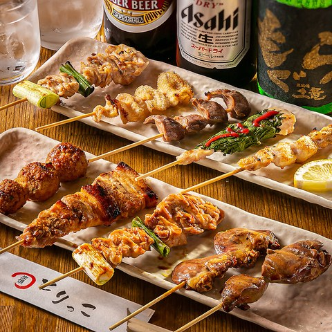
| 営業時間 | 17:00〜翌1:00（月火木〜日・祝日・祝前日） |
|---|---|
| 定休日 | 水曜日 |
| 住所 | 奈良県奈良市西大寺本町2-24 |
| 予約 | 可 |
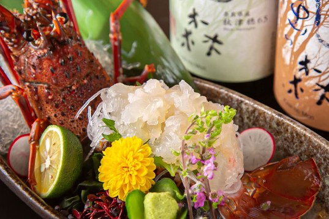
| 営業時間 | 17:00〜23:00（L.O.22:30） |
|---|---|
| 定休日 | 月曜日（祝前日の月曜は営業） |
| 住所 | 奈良県奈良市三条町495 バナナビル3F |
| 予約 | 可 — ☎ 0742-27-0866 ／ 公式サイト |
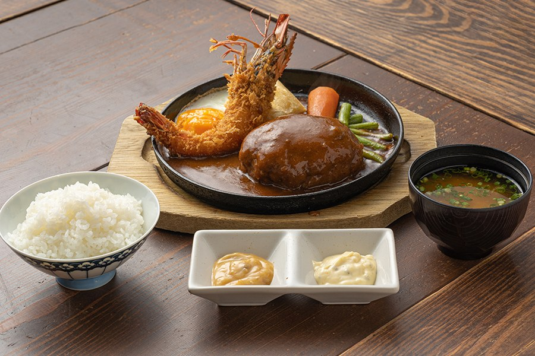
| 営業時間 | 11:00〜15:30(L.O.、材料がなくなり次第終了) |
|---|---|
| 定休日 | 火曜(不定休)・水曜(祝日は営業) |
| 住所 | 奈良県奈良市公納堂町14 |
| 予約 | 不可(電話問い合わせ) — ☎ 0742-24-5187 ／ 公式サイト |
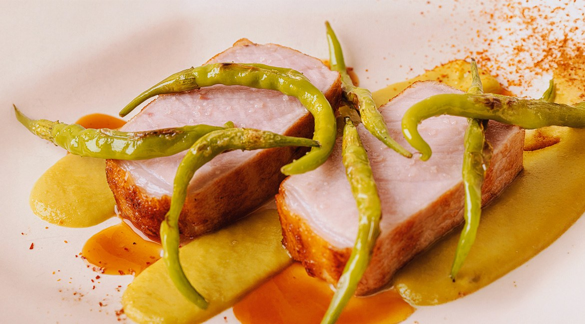
| 営業時間 | ランチ(水・木)12:00〜15:00／ディナー(月・金・土)18:00〜22:00 |
|---|---|
| 定休日 | 日曜・火曜(水・木は夜休業、火・日は終日休業) |
| 住所 | 奈良県奈良市大宮町2-1-5 カーサヤマグチ1F |
| 予約 | 要予約 — ☎ 0742-33-4000 ／ 公式サイト |
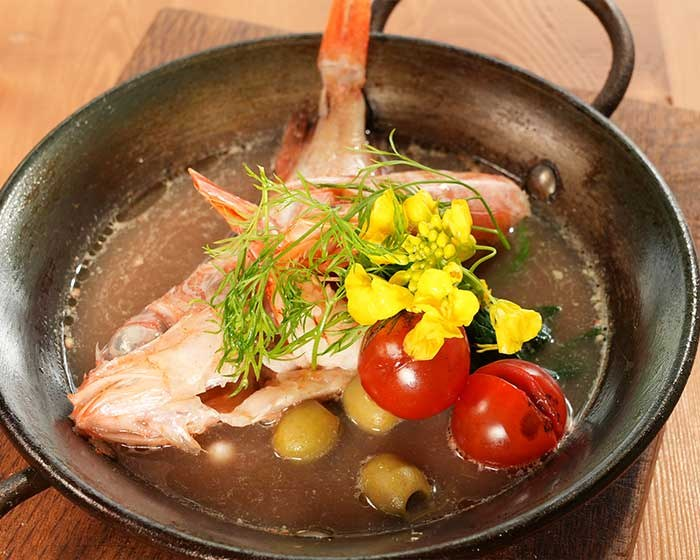
| 営業時間 | 11:30〜14:00(L.O.13:30)／18:00〜24:00(L.O.23:30) |
|---|---|
| 定休日 | 月曜(祝日の場合は振替あり) |
| 住所 | 奈良県奈良市林小路町39 |
| 予約 | 可 — ☎ 0742-24-2055 ／ 公式サイト |
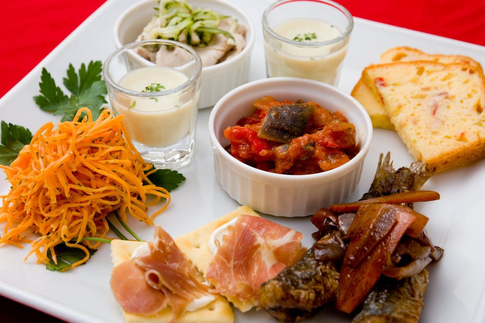
| 営業時間 | ランチ11:30〜15:00(L.O.14:00)／ディナー17:00〜21:00(L.O.20:00、月〜水は休業日あり) |
|---|---|
| 定休日 | 木曜・第3水曜 |
| 住所 | 奈良県奈良市学園大和町2-52 大和スーパーマンション1F |
| 予約 | 可 — ☎ 050-5486-4719 ／ 公式サイト |
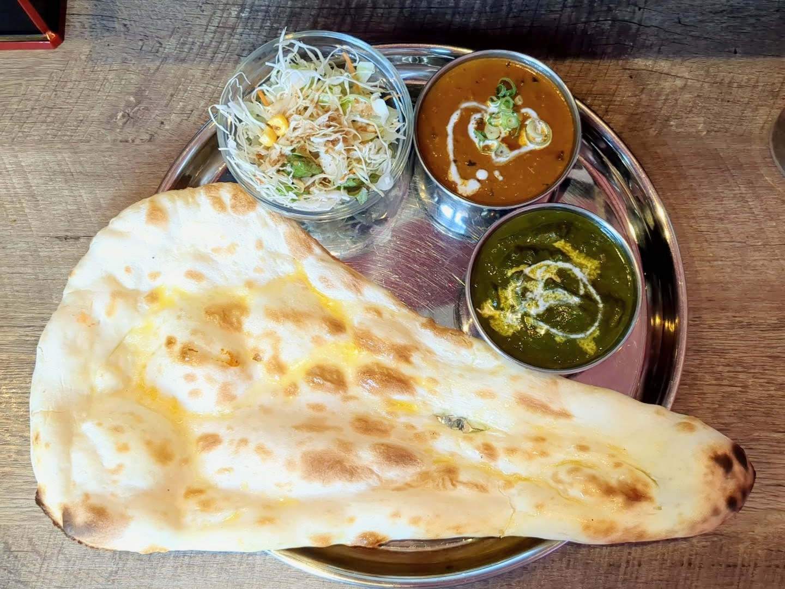
| 営業時間 | 11:00〜15:00(L.O.30分前)／17:00〜21:30(L.O.30分前) |
|---|---|
| 定休日 | なし(年中無休) |
| 住所 | 奈良県奈良市北小路町1-11 |
| 予約 | 可 — ☎ 0742-22-3340 |
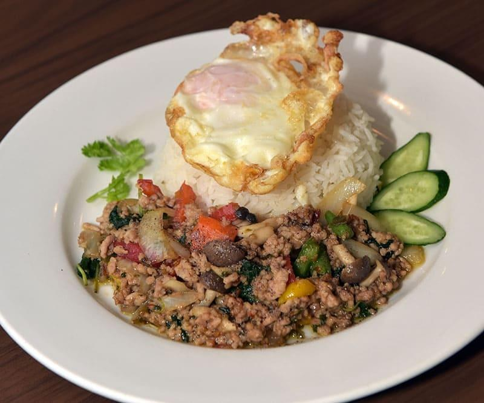
| 営業時間 | ランチ11:30〜15:00(L.O.14:30)／ディナー18:00〜21:30(L.O.21:00) |
|---|---|
| 定休日 | 水曜(イベント出店で臨時休業あり) |
| 住所 | 奈良県奈良市杉ヶ町43-4 |
| 予約 | 可 — ☎ 0742-31-0009 |
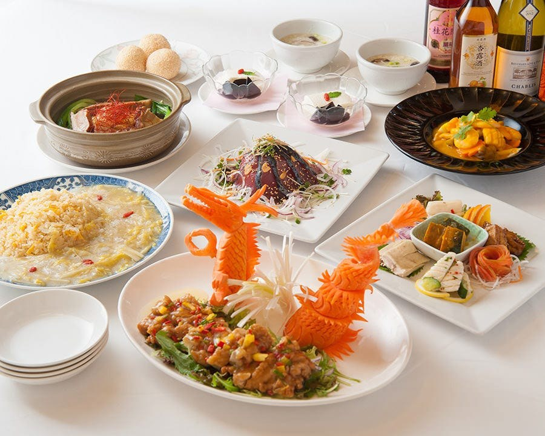
| 営業時間 | ランチ11:00〜15:30(L.O.15:00)／ディナー17:00〜21:30(L.O.20:30) |
|---|---|
| 定休日 | 年末年始のみ(通常は無休で営業) |
| 住所 | 奈良県奈良市三条大路1-1-47 |
| 予約 | 可 — ☎ 050-5485-1672 ／ 公式サイト |
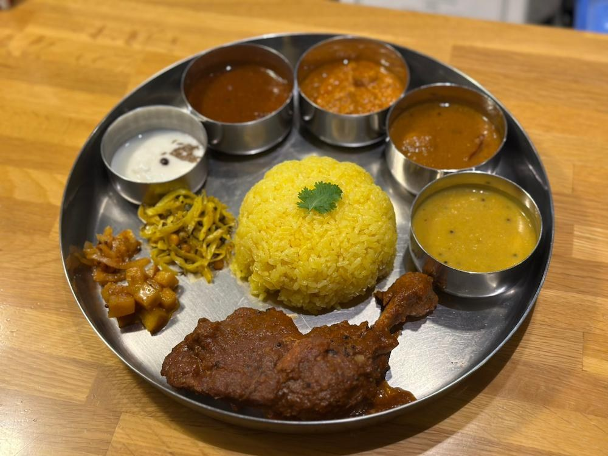
| 営業時間 | 要確認(公式SNSで月ごとに営業日を告知) |
|---|---|
| 定休日 | 不定休 |
| 住所 | 奈良県奈良市東向北町22 |
| 予約 | 要確認 — 公式サイト |
| 営業時間 | 7:00〜21:00(料理・ドリンクL.O.20:00、予約状況により短縮営業の場合あり) |
|---|---|
| 定休日 | 不定休 |
| 住所 | 奈良県奈良市上三条町29-1 アパホテル〈近鉄奈良駅前〉1階 |
| 予約 | 不可(一部オンライン注文可) — 公式サイト |
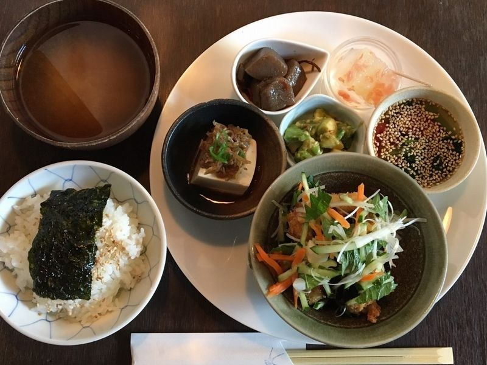
| 営業時間 | 11:00〜19:00 |
|---|---|
| 定休日 | 月曜日 |
| 住所 | 奈良県奈良市公納堂町13 |
| 予約 | 不可(混雑時は待ち時間あり) — ☎ 0742-22-3214 |
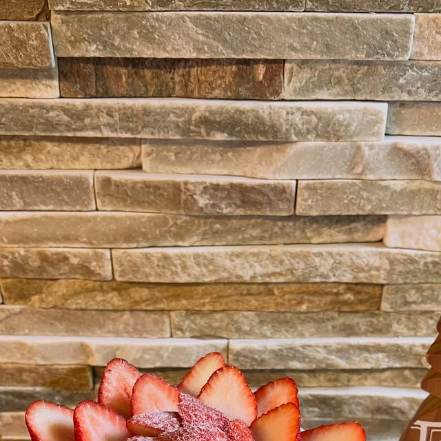
| 営業時間 | 10:00〜16:00(水・木のみ営業) |
|---|---|
| 定休日 | 水・木以外は休業 |
| 住所 | 奈良県奈良市高畑町974 |
| 予約 | 不可・当日先着 |
| 営業時間 | 10:00〜17:00(13:00〜14:00クローズ) |
|---|---|
| 定休日 | 木曜日 |
| 住所 | 奈良県奈良市餅飯殿町47 |
| 予約 | 必要(前日21時よりWeb予約開始) |
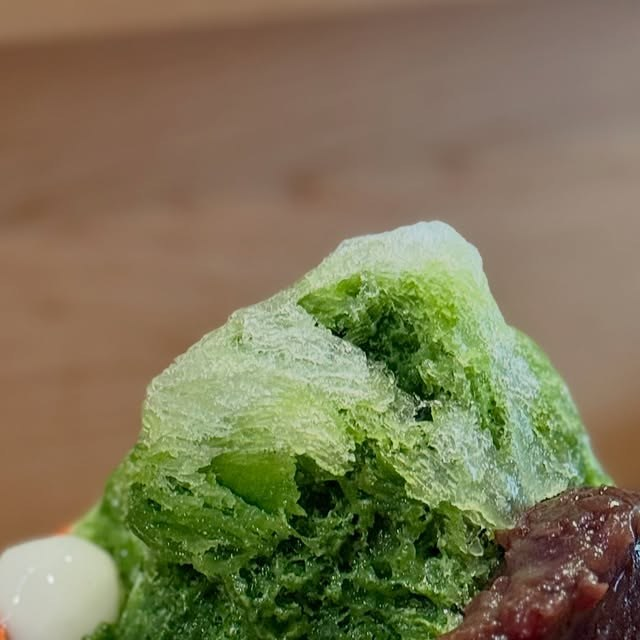
| 営業時間 | 販売9:00〜18:00/喫茶11:00〜16:30(L.O.) |
|---|---|
| 定休日 | 無休 |
| 住所 | 奈良県奈良市中院町22-3 |
| 予約 | 和菓子コースは完全予約制(1日1回11:00〜13:00)、喫茶は予約不要 — ☎ 0742-22-8899 ／ 公式サイト |
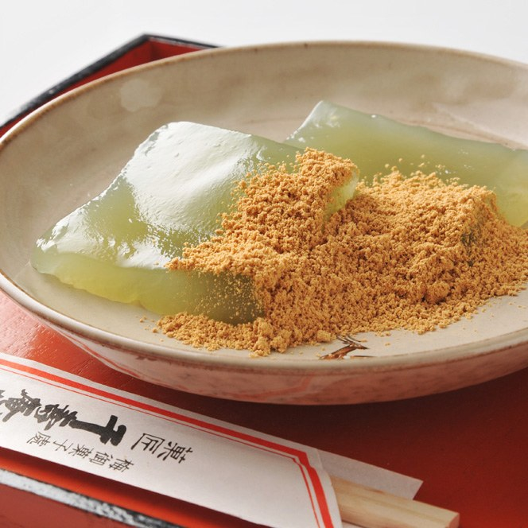
| 営業時間 | 店頭販売10:00〜18:00頃(季節・曜日により変動、茶寮は週末昼のみ営業の場合あり) |
|---|---|
| 定休日 | 元日のみ休み |
| 住所 | 奈良県奈良市押上町39-1 |
| 予約 | 不可 — ☎ 0742-23-3003 ／ 公式サイト |
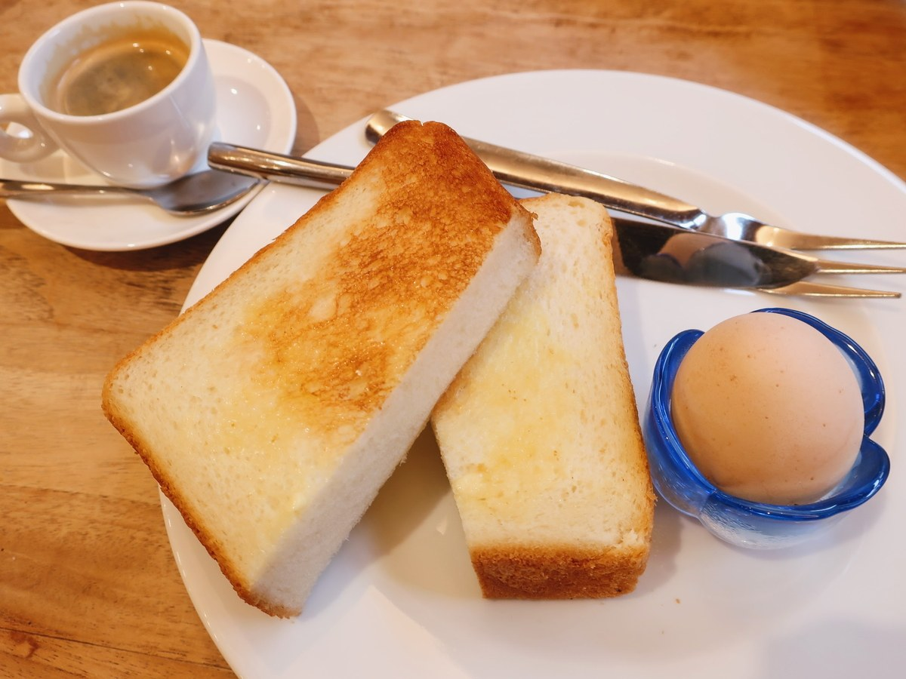
| 営業時間 | 7:00〜22:00 |
|---|---|
| 定休日 | 無休 |
| 住所 | 奈良県奈良市小西町39 |
| 予約 | 不可 — ☎ 0742-26-6858 ／ 公式サイト |
本ガイドは個人利用目的で作成。掲載情報は2026年9月時点の調査に基づく。写真出典: 各店の公式サイト・公式SNS、および地域情報サイト等の掲載写真（著作権は各サイト・各撮影者に帰属）。引用元は店ごとにカード内へ明記。